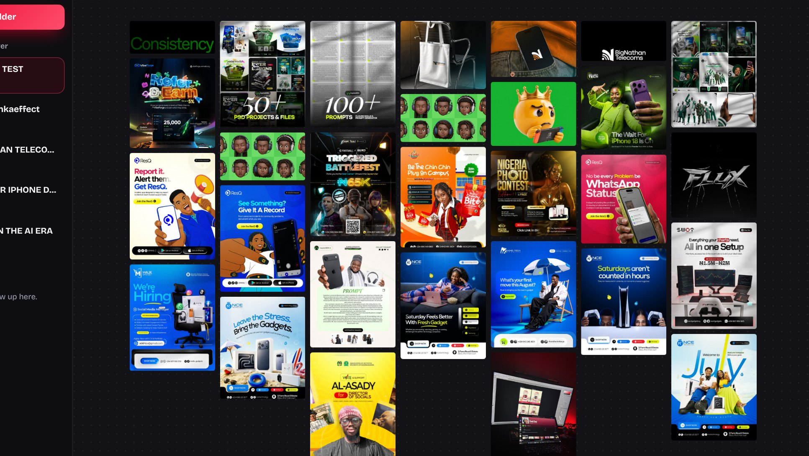
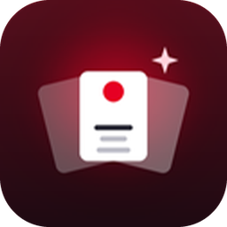
Install & user guide. Turn your Pinterest saves into a living moodboard that floats over Photoshop, Figma and Canva.
Inspired Moodboard is a desktop app for designers. It opens any folder of images, like the collections you save from Pinterest, and lays them out as one clean board you can keep beside your design work.
Every design in a folder on one board, in a tidy grid, sorted by colour, or with your favourites shown big.
Keep the board on top of Photoshop, Figma or Canva, make it see-through, and drag pictures straight into your work.
Collections from the Inspired Pin Saver extension show up by themselves. New saves appear on the board as they arrive.
Inspired Moodboard comes as one file, Inspired Moodboard V.1 Setup.exe (about 122 MB). Everything the app needs is inside it, so installing needs no internet and nothing else to download.
The first time you open the setup file, Windows may show a blue box saying Windows protected your PC. This appears for any app that isn't signed with a paid certificate; it doesn't mean anything is wrong.
Click More info, then Run anyway. Your antivirus may also ask; choose to allow it.
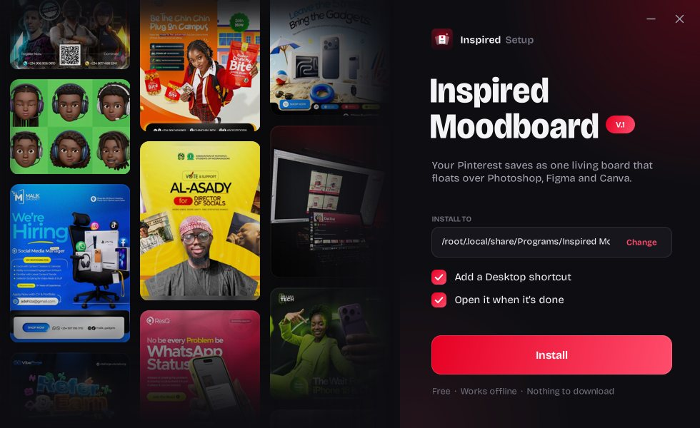
The installer. Designs scroll by on the left while you choose your options.
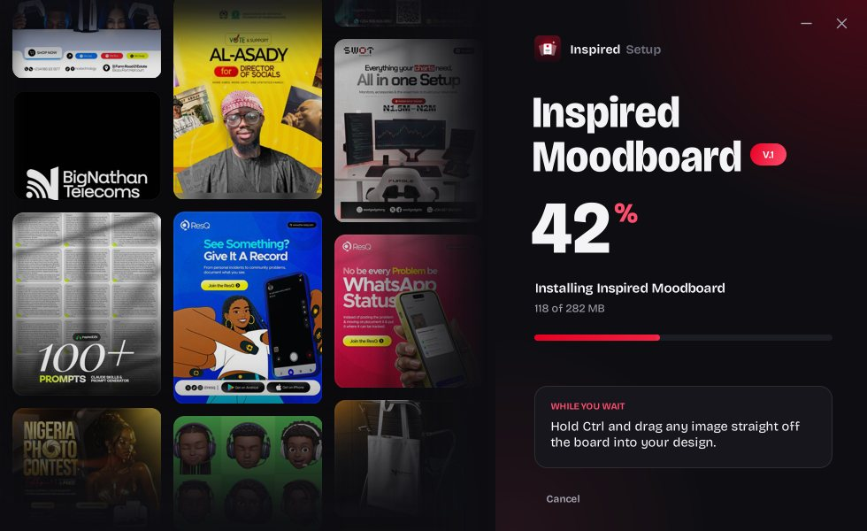
Installing. It checks the file isn't damaged, then sets everything up.
Double-click Inspired Moodboard V.1 Setup.exe. If Windows asks, choose More info → Run anyway.
Install to shows where the app goes; leave it as it is unless you want it elsewhere (Change). Tick Add a Desktop shortcut and Open it when it's done if you want them.
Watch the percentage climb. There are tips while you wait. It usually takes under a minute.
Inspired Moodboard is now on your Desktop and in the Start menu, and opens straight away if you ticked that box.
The first time Inspired Moodboard opens, it asks for a folder. After that it always reopens the board you used last.
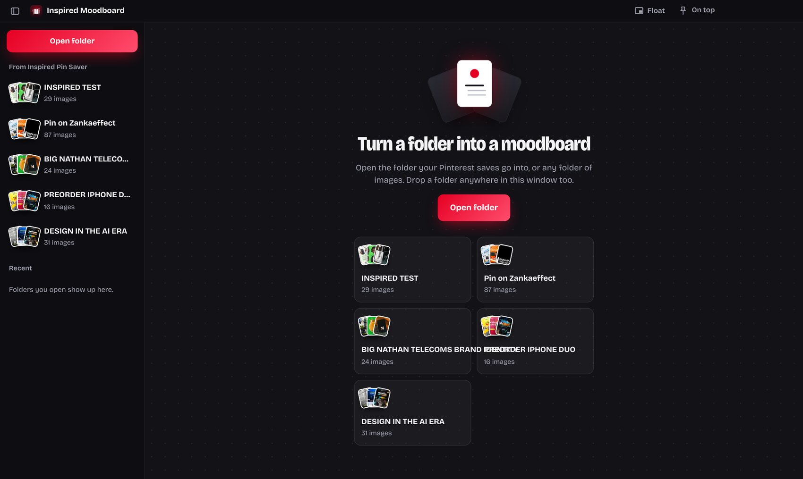
The welcome screen, listing collections saved with the Inspired Pin Saver extension.
Collections you save with the Inspired Pin Saver Chrome extension (in Downloads\Pinterest) are listed on the left. Click one to open it.
Click Open folder and pick any folder of images: client references, a shoot, an old project. Press Ctrl O anytime.
Drag a folder from File Explorer onto the window. Folders you've opened before are listed under Recent.
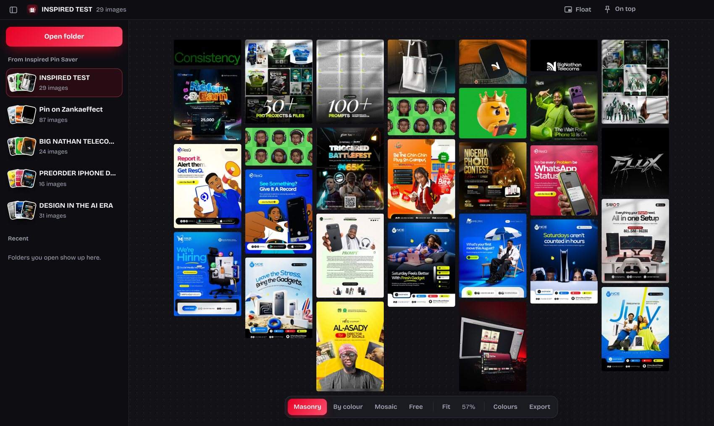
1 2 3 4 5 6Switch with the toolbar at the bottom, or press 1 2 3 4.
A neat Pinterest-style grid in saved order. The best everyday view.
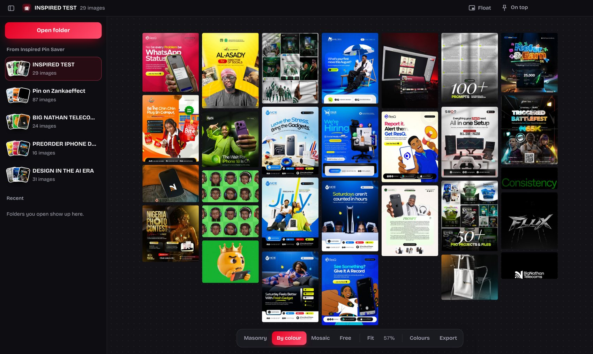
Sorted into a colour flow, from reds round to blues, with neutrals at the end. Great for finding a palette.
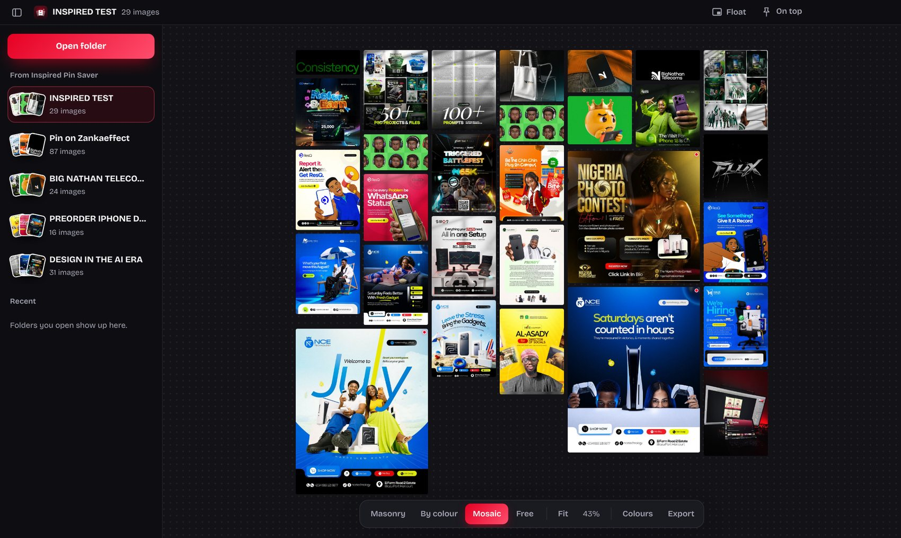
Your featured images show big and everything else fits around them. To feature one, click it and press Feature (or S).
Move images anywhere you like, the way you'd pin prints to a wall. Dragging any image switches to Free on its own.
Inspired Moodboard remembers where everything goes, so the board looks the same next time.
Fit (F) shows the whole board again. Double-click empty space does the same.
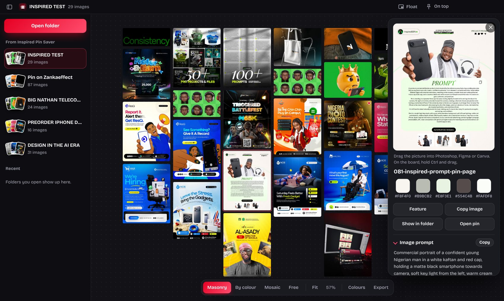
Click any image to open it in the side panel on the right.
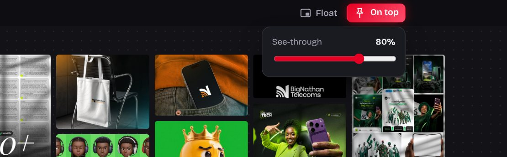
Click On top (or press T) and the board stays above Photoshop, Figma or Canva. Hover the button to get the See-through slider, so you can see your design behind the board.
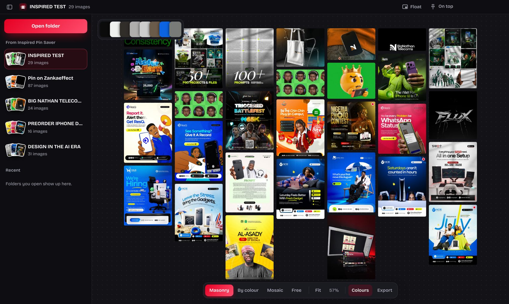
Colours shows the main colours of the whole board; click one to copy its hex. Export saves the whole board as one PNG, ready to send to a client.
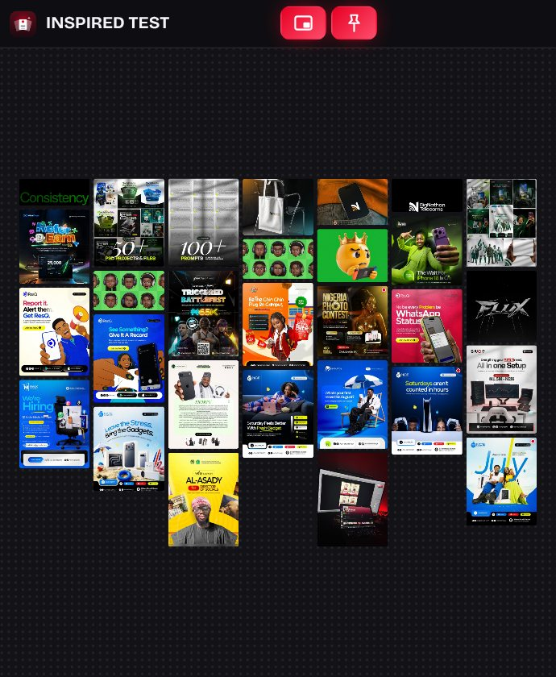
Click Float (or Ctrl Shift F) to shrink the board into a small window in the corner that stays on top. Click Float again to go back.
| Zoom | Scroll the mouse wheel |
| Move the board | Drag empty space |
| Zoom to an image | Double-click it |
| See everything | Double-click empty space, or F |
| Open an image | Click it |
| Close the side panel | Esc |
| Ctrl O | Open a folder |
| 1 2 3 4 | Masonry · By colour · Mosaic · Free |
| F | Fit the whole board |
| T | Keep on top |
| Ctrl Shift F | Float |
| S | Feature the selected image |
| Ctrl C | Copy the selected image |
| Ctrl + drag | Drag an image into another app |
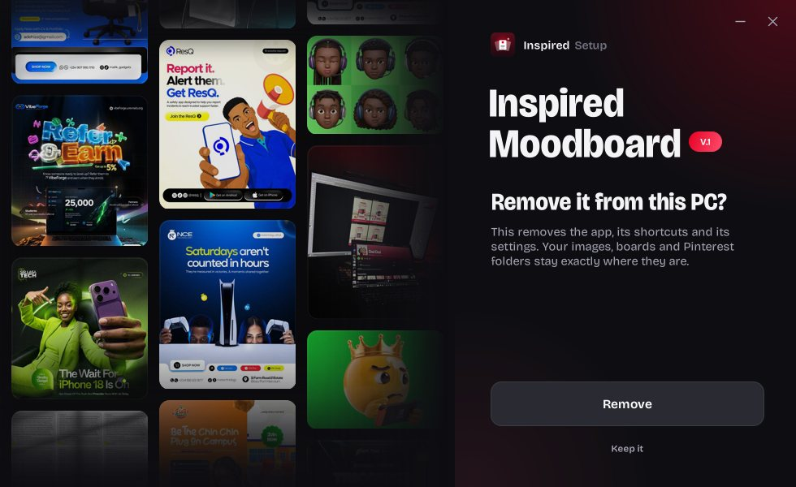
Removing it keeps your images, boards and Pinterest folders exactly where they are.
Click Remove. The app, its shortcuts and its settings are removed.
| "Windows protected your PC" | Normal for unsigned apps. Click More info → Run anyway. |
| Antivirus blocks it | Choose Allow or Restore in your antivirus, then run the setup file again. |
| "This Setup file is damaged" | The download or copy didn't finish. Get a fresh copy of the file and run it again. |
| Not enough space | Free up about 350 MB on your C: drive, or click Change to install on another drive. |
| Setup closes with a message | The message names a log file. Send the file Inspired Moodboard Setup.log (in %TEMP%) to whoever gave you the app. |
| My collections aren't listed | The list shows folders in Downloads\Pinterest. For anything else, use Open folder. |
Save designs from Pinterest on your phone, see them on a moodboard, and send them to WhatsApp as a full-quality zip. Install Inspired V.1 (Android).apk on Android 7 or newer; if asked, allow Install unknown apps.
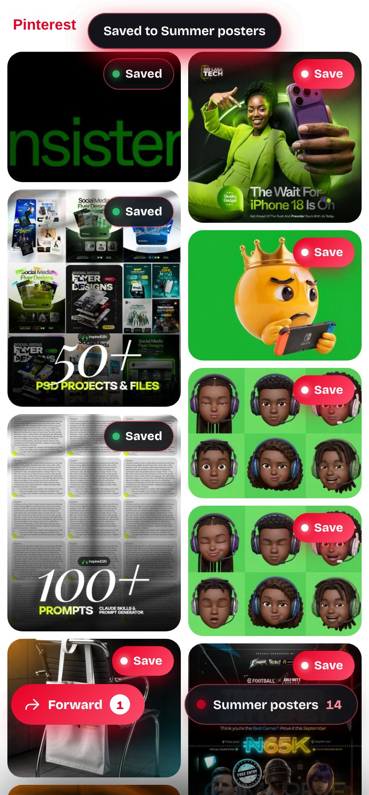
1 · Save. Tap Open Pinterest in the app. Every pin gets a red Save; tap it and the design downloads at full size.
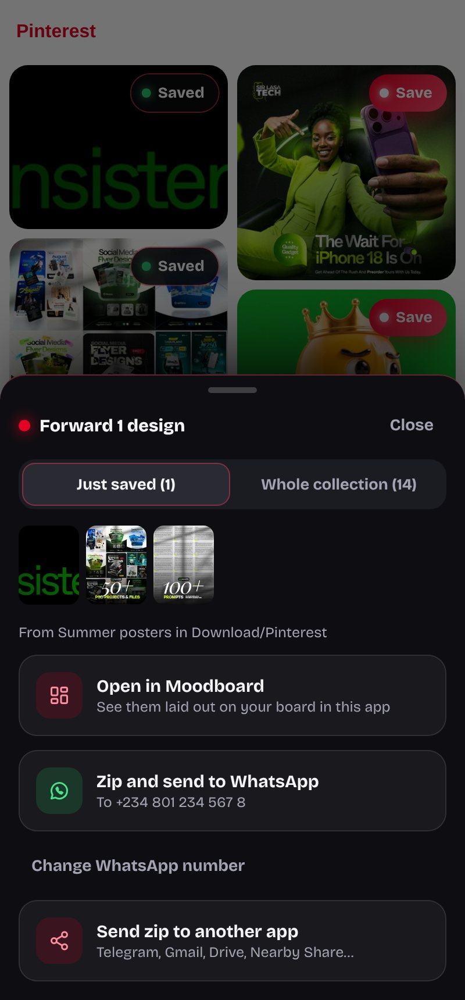
2 · Forward. Tap the red Forward button: open them on your moodboard, or zip them and send to your WhatsApp number.
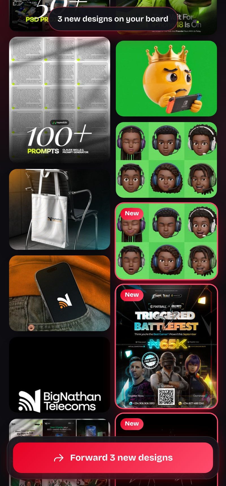
3 · Your board. New designs are marked on the board. View by colour, share, copy, float, or save the board as one picture.
Open a pin, tap Share, then Inspired. Pick a moodboard and tap Save. You can forward it to WhatsApp right there.
Phone saves go to Download/Pinterest, in the same folder layout as on your computer. Copy that folder across and open it in Inspired Moodboard.